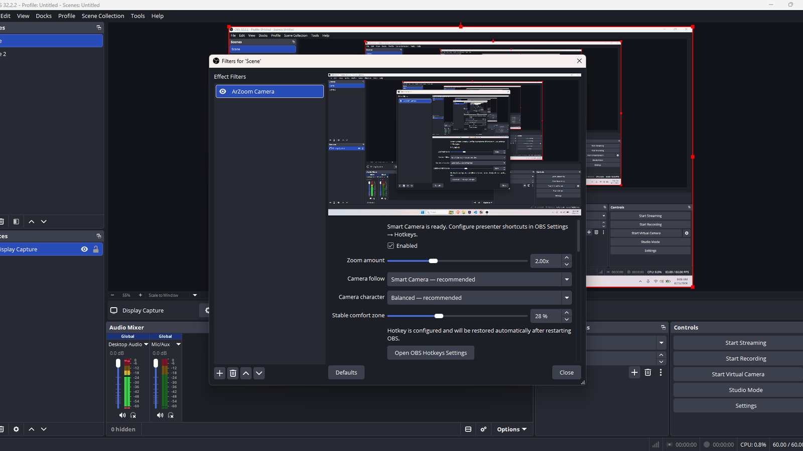

THE PRESENTATION CAMERA FOR OBS
Make every detail
easier to follow.
Smooth zoom. Cinematic Spotlight. A pointer your viewers can actually see. Everything works right inside OBS Studio.
Free & open source · Windows 10/11 x64 · Native OBS plugin
INSIDE OBS STUDIO Actual ArZoom interface

Native controls. No separate app to learn.OBS Studio · WindowsFor people who teach, build, explain and create.Explore the possibilities ↓
One native plugin.
A clearer story on screen.
SMART CAMERASPOTLIGHTPOINTER & CLICKSPRESENTER HOTKEYS
BUILT FOR BETTER EXPLANATIONS
Keep attention on
what matters.
Every tool has one job: make your screen easier to understand without interrupting your flow.
01 / SMART CAMERAZoom into the important part. Smoothly.
Move closer to the detail you’re explaining, then return to the bigger picture. Smart Follow helps keep your work in frame.
Explore Smart Camera FRAMING CONCEPT · ILLUSTRATION 02 / CINEMATIC SPOTLIGHTGive one detail the spotlight.
Dim the distractions while the important area stays bright. Shape, size and softness are yours to control.
Discover Spotlight SPOTLIGHT EFFECT · ILLUSTRATION 03 / PRESENTATION CURSOR & CLICKSMake every movement easy to see.
Pick a pointer that suits your style, adjust its size and highlight clicks with a clean visual ring. Even a small action becomes clear.
See pointer options PRESENTATION CURSOR · ACTUAL ASSETS 04 / PRESENTER CONTROLSStay in control. Stay in the moment.
Zoom, freeze the view or switch Spotlight with your own OBS hotkeys. Optional on-screen shortcut keycaps help viewers follow along.
Set up your controls PRESENTER SHORTCUTS · ILLUSTRATIONZoom inCtrl + +
Freeze viewF
SpotlightS
Example keys only. Assign your own shortcuts in OBS.
SIMPLE TO GET STARTED
From install to your next great explanation.
ArZoom works inside the OBS setup you already know. No extra desktop application or separate workflow.
Read the setup guide - 01Install
Close OBS and run the Windows installer.
- 02Enable in OBS
Open Tools → ArZoom — Toggle Scene Camera.
- 03Present
Configure camera, pointer and preferred hotkeys.
READY WHEN YOU ARE
Better focus starts here.
Make your next OBS presentation easier to follow.
Windows 10/11 x64 · Latest stable v0.7.3 · Free & open source
Installer recommended. ZIP contains files for manual OBS plugin installation, not a standalone app. Installation instructions · SHA-256 checksums
Is ArZoom a standalone app?
No. ArZoom is a native plugin that runs inside OBS Studio on Windows.
Does it work directly inside OBS?
Yes. It adds presentation-camera controls to your existing OBS workflow.
How do I install it?
Close OBS, run the Windows installer, then reopen OBS and enable Scene Camera from the Tools menu. See the setup guide.
Can I change the pointer and Spotlight?
Yes. Choose from 13 pointer styles, adjust size and Spotlight focus, and turn on click feedback. Spotlight is off by default.
Is it free and open source?
Yes. ArZoom is free and its code is available on GitHub under GPL-2.0-or-later.